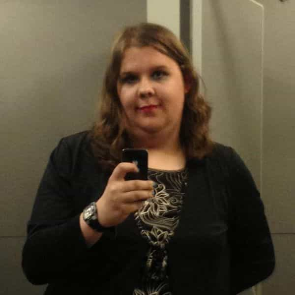
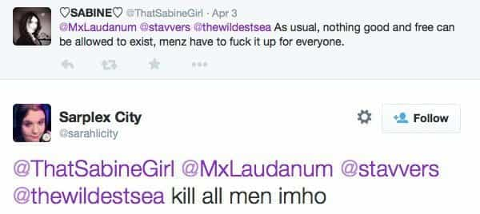
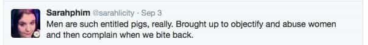
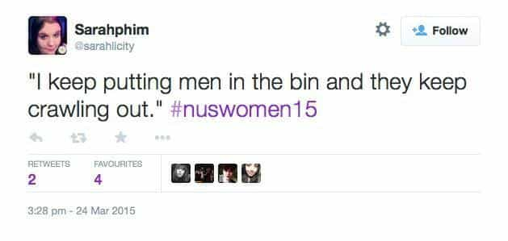
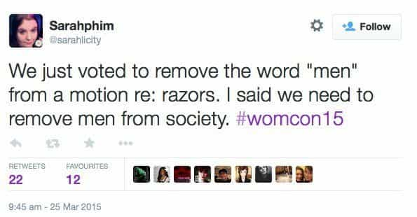
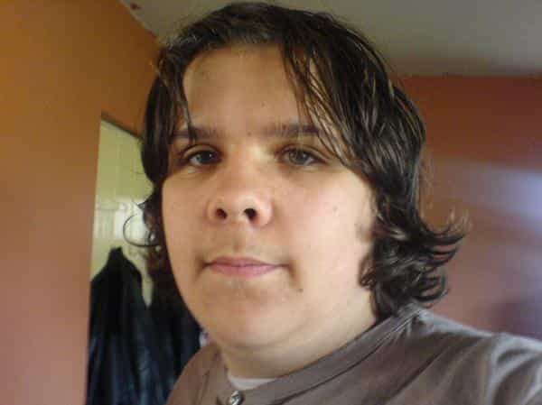

< < < Back
Diversity Officer At London Uni Bans Whites And Men From “Anti-Racist” Event – Return Of Kings
An elected diversity officer at London’s liberal-infested Goldsmiths University has caused consternation by banning men and whites from a campus meeting. Bahar Mustafa, 27, properly titled “Welfare and Diversity Officer,” initially advertised the event on her Facebook page as a “BME Women and non-binary event only.”
After being called out on her apparent racism and sexism against whites and men, she doubled down in defiance, posting an anti-male selfie on her Facebook. Coming in the same week as a LibDem activist Sarah Noble was suspended by her (if that is her preferred pronoun) party over tweets calling for the death of all men, the revelations about Bahar Mustafa raise questions whether British Universities has been infected with US-style identity politics of the lunatic fringe.
Politics and the English language
Bahar Mustafa, a textbook thousand-cock stare.
The brou-ha-ha began with a Facebook event which invited followers to “Invite loads of BME Women and non-binary people.” BME, as a sidenote, is an acronym for “Black and Ethnic Minority.” The use of the term provides a clue into the mind-set of Mustafa, who clearly subscribes to an American-style identity politics based on alphabet soup abbreviations and invented buzzwords.
The origin of the term is obscure, and nobody seems to know whether black people and ethnic minorities have been consulted about being filed under a common abbreviation. Even the diversity industry has said that “referring to people with a set of initial letters is basically reductionist, dehumanising and outrageous.”
This has not prevented right-on politicians of all stripes from trotting the phrase out on a regular basis in order to appear sensitive to “the issue of race.” Non-binary is a term better known to the ROK readership, signifying confused degenerates who disassociate from the traditional, healthy gender roles ascribed to men and women in traditional societies that rank low on the DEFCOCK scale.
Racism and bigotry à la mode
In today’s climate of microaggressions and “check your privilege,” weak-minded people associating on and off campus in order to wallow in their own embellished victimhoods is old hat. What is shocking, however, is the stipulation attached by Bahar Mustafa to the invite:
if you’ve been invited and you’re a man and/or white PLEASE DON’T COME
The meeting organised by Bahar Mustafa, an apparent candidate for a precocious impact with The Wall who has the inane expression of a child that won’t out-earn their parents, was to discuss “diversification of the curriculum.” Heaven forfend some white or male student might dare to question the sort of “student democracy” that pretends to exclude a group of people from discussions of policy that will affect them, and for which they will have to pay.
Bahar reacted to the outrage provoked by her anti-white, anti-male post by posting a selfie in front of a white piece of A4 paper bearing the text “no white cis men.” Accompanying the slogan was an illustrated mug filling with “male tears.”
Public patience is wearing thin
It seems that unlike our cousins over the pond, the British appetite for racial and gender-based self-flagellation is less pronounced. The Daily Mail reported that the University itself wrote to its Student Union to “express concern.” The Tab, Goldsmiths’ student paper, reported a senior Student Union society president, speaking on condition of anonymity
For Bahar to have the nerve to write this is patronising beyond belief. She (if that is her preferred gender pronoun) has made it very difficult for white cis males on campus who feel like they can’t say anything for fear of retribution. the irony that she (or they) think that they are diversifying the student community in the name of feminism and multiculturalism is laughable.
The barely disguised irony of the “anonymous dissenter” reveals that not everybody is subscribing to the policy book of what Heartiste calls the Degenerate Freak Mafia. The loons at the Goldsmiths SU, sensing the outrage was coming from more than a few neckbeards they could afford to brush off, backtracked and updated the event page to read “allies now welcome.”

The Holocaust: too “Eurocentric” for Goldsmiths’ Student Union
It’s not the first instance of lunatic left wing policies cropping up at Goldsmiths. Earlier in the year, the Goldsmiths Students Assembly voted down a motion to commemorate the Holocaust, because to commemorate the Holocaust would be “Eurocentric” and “colonialist.” One student nonsensically complained that, “The motion would force people to remember things they may not want to remember.”
Trans dyke, feminist, equality campaigner
Sarah Noble: not even with yours.
The other recent case of Sarah Noble, the LibDem committee bod suspended by the party over her tweets calling on followers to “kill all men,” shows that lunatic fringe might be spilling out of the confines of the campus and into mainstream party politics.
Sarah Noble first popped up at the NUS Women’s conference that gifted “jazz hands” unto the world. She is an author on assorted Liberal talking points, mostly prostitution, which she wants to legalise. She writes on Democrat Voice, a major independent blog of Britain’s coalition minority ruling party. T
his character calls herself a “Trans dyke, feminist, LGBTLD executive member, NUS LGBT committee member-elect, sex work and equality campaigner.” Her tweets about #NUSWomen15 included the following gems:

  
Obviously a virulent man-hater, Sarah Noble is also a busy bee, and sits on the Liberal Democrats’ LGBT committee, their Humanist and Secularist committee, her regional committee in Yorkshire and Humber, and the policy committee of Liberal Youth.
Or she did, until she resigned or was suspended from her appointments pending investigations. This is the UK’s minority governing party, purporting to offer “Change That Works For You” by “Building a Fairer Britain.” You might be forgiven for failing to see the “fairness” in “removing men from society.”
Liberal Democrat MP Jo Swinson was happy to try to distance the LibDems from Noble’s comments: “Such comments are completely unacceptable and in no way representative of the views of Liberal Democrats. We have taken action and asked the person in question to remove the posts and apologise.”
But does anyone really believe this? Sarah Noble is an up-and-coming young Liberal Democrat, with fingers in many pies. She is clearly going places within the party hierarchy. If such a character feels at ease in uttering hate speech against men, that must mean that such sentiments are all too common amongst her ilk, and she inadvertently turned her filter off.
A noble cause
Modernity is spawning hermaphrodites.
The brazen chutzpah of the woman (if it is indeed a woman) is evident in the terse statement about the incident posted on her website. Here it is in full:
For a significant period of time I have been the subject of misogynistic online trolling and harassment of the most personal and unpleasant kind. In response to that I made a series of tweets that I realise now have caused offence. I have now deleted those tweets and apologise to those I have offended, whether in my own party or members of the public. I am also grateful to those in the party who have handled this fairly and promptly.
The problem, apparently, is not wanting to “kill all men.” It’s “causing offence.” It would be hard to imagine an up and coming politician making a statement calling for the “death of all negroes” only to then get away with making such a tepid apology.
The icing on the cake is the leading mention of “misogynistic online trolling,” which canny minds might regard as a fair cop in response to the patently misandrist online trolling that she engaged in. Still, the victimhood runs deep in these hucksters.
What is to be done?
Nutters like Bahar Mustafa and Sarah Noble infect every level of politics from the zany corners of campus to the heights of power. It’s tempting to think that they are fringe lunatics operating in small numbers, but the brazenness with which they spew their bile suggests that their views are common coin.
I have previously advocated the placing these sorts hucksters under surveillance. If the United Nations can get itself involve over Katie Hopkins calling migrants “cockroaches,” then surely it’s time that genocidal filth like Bahar Mustafa and Sarah Noble are treated as equivalent to ISIS on British University campuses and local political scenes.
For these “liberals,” an illiberal attitude to their genocidal, separatist ramblings is an absolute must.
Read Next: Protein World Enrages Feminists Who Hate Female Beauty


{kind=link}
{kind=link}
{kind=link}
{kind=link}
{kind=link}
{kind=link}
{kind=link}
{kind=link}